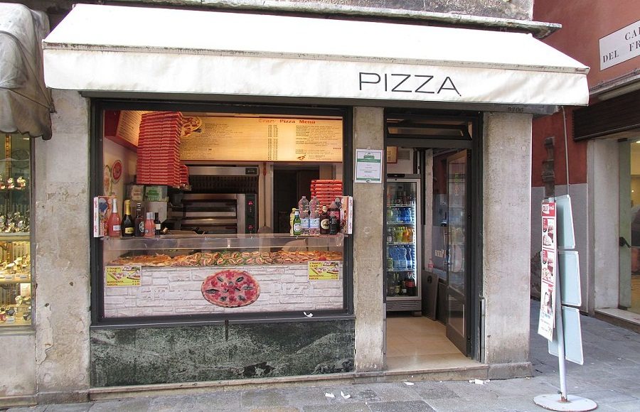

La pizza margarita es una típica pizza napolitana elaborada con tomate, mozzarella (tradicionalmente se usa el Fior di latte), albahaca fresca, sal y aceite. Se trata de la pizza napolitana más popular, junto con la marinera.

Promociones de Pízza
Margarita
Como hemos visto, la pizza margarita es la más clásica de las pizzas italianas y la que abrió paso al resto
de pizzas que posteriormente se fueron elaborando.Los ingredientes de esta pionera no fallan, y son los
preferidos de los auténticos amantes de la pizza tradicional: salsa de tomate, mozzarella, albahaca, orégano
y aceite de oliva. ¿A qué te recuerdan los colores de estos ingredientes? Sí, a la bandera italiana
Napolitana
Junto con la margarita, la pizza napolitana se sitúa como la segunda más tradicional de Italia. Una de las
peculiaridades de esta pizza, también conocida como romana, es su masa: suave, esponjosa y algo más gruesa
que la ortodoxa italiana, con los bordes más altos. Sus ingredientes, algo más valientes que la clásica
margarita: salsa de tomate, queso mozzarella, anchoas, orégano, alcaparras y aceite de oliva
Carbonara
La pizza carbonara es, seguramente, una de las pizzas blancas más famosas (no lleva tomate en su base). Su textura jugosa y cremosa se la debe a los ingredientes con los que tradicionalmente se elabora la salsa carbonara: huevo, queso parmesano, sal y pimienta. Una de las claves para que la carbonara quede perfecta está en cocinar previamente estos ingredientes en una sartén o cazuela.